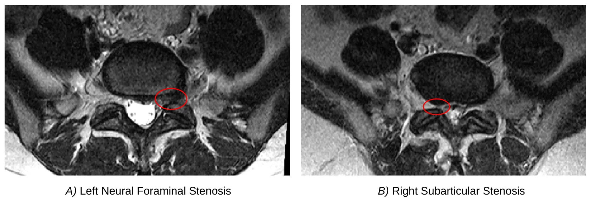
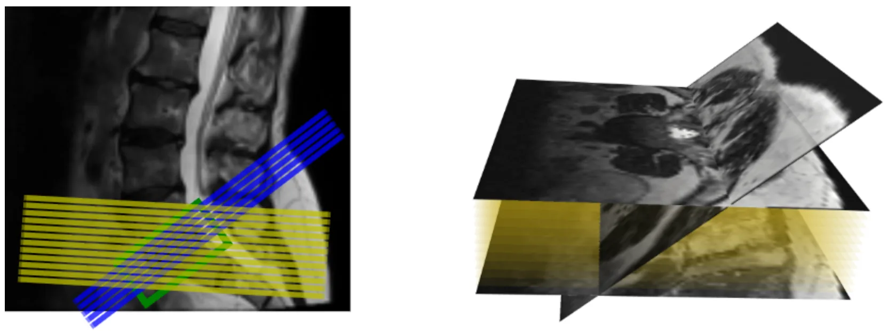
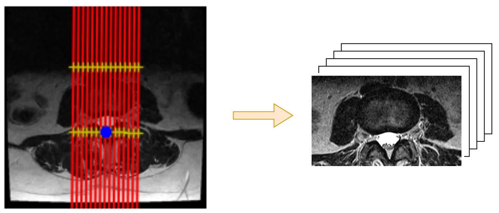
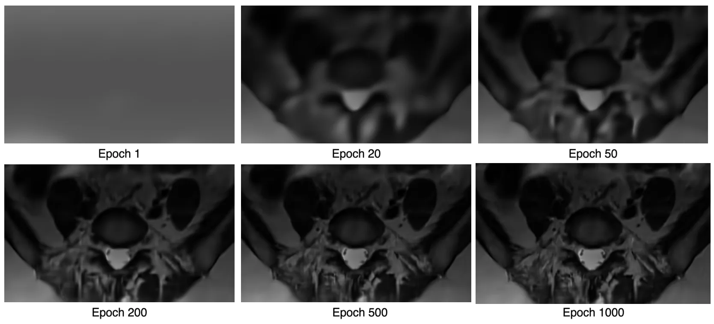

用 3D Gaussian Splatting 渲染 MRI 新视角Rendering Novel Views of MRI Using 3D Gaussian Splatting
采集关键词命中 3DGS 且方法涉及稀疏体重建，但应用场景是医学 MRI，和 SLAM/GNSS/机器人三维重建关系间接；可借鉴任务导向重采样与显式高斯体表示思路。
一句话工作总结
把 3DGS 用于稀疏各向异性 MRI 的体重建和任意解剖平面重采样，以提升脊柱狭窄分级表现。
摘要
本文目标是改进脊柱 MRI 上的放射学分级：原始稀疏各向异性扫描平面往往没有与目标解剖结构对齐，导致局部狭窄等病变不能完整落在平面内。作者将 3D Gaussian Splatting 改造成一种体重建表示，从稀疏 MRI 生成可按目标解剖方向采样的新视角/新平面图像，再用这些重采样图像预测局部狭窄严重程度等级。与基于反距离加权最近邻强度平均的体素插值重采样相比，Gaussian Splatting 重采样在多个狭窄条件下得到更准确的分级结果。该工作偏医学影像，不是机器人 SLAM，但展示了 3DGS 在稀疏体数据与任务导向重采样中的潜力。
The objective of this paper is to improve radiological gradings measured on MRIs of spines, by resampling scans so that the new view planes are better aligned with the target anatomy than the original sparse images. To this end, we adapt 3D Gaussian Splatting to form a volumetric reconstruction starting from sparse anisotropic MRIs, and imaging planes aligned with the anatomy relevant for clinical evaluation are then sampled and rendered. The novel view plane is optimal for diagnostic radiological grading of the target anatomy, whereas the original MRI is not. The resampled scans are then used to predict ordinal severity grades of localised stenosis conditions in spinal MRIs. We compare our method against Voxel Interpolation resampling, which takes the average of inverse-distance weighted nearest neighbour intensities for each target coordinate. Experiments show that across all stenosis conditions, resampled scans using Gaussian Splatting produce more accurate stenosis gradings compared to the raw scans which do not include the complete anatomy in-plane, as well as images resampled using Voxel Interpolation.
中文解读摘录
- 英文题名：SatSplatDiff: Geometry-preserving generative refinement for high-fidelity satellite Gaussian Splatting
- 作者：Jiyong Kim, Shuang Song, Ronjgun Qin
- 类别/来源：cs.CV；23 pages, 15 figures；采集 score=10；阅读优先级=8.2/10。
- 一句话总结：在 SatSplat 的摄影测量 DSM 初始化与 2DGS 阴影建模基础上，加入深度监督、多尺度几何细化和 shadow-guided generative refinement，试图提升卫星 3DGS 外观质量同时抑制扩散式细化带来的几何幻觉。
- 为什么值得看：卫星/航测场景的视角通常集中在顶部，建筑立面监督不足，3DGS 容易出现洞、立面不稳定和跨 tile 不一致。本文强调“生成式增强不能破坏几何一致性”，用几何计算阴影图约束监督图像更新；摘要报告 IARPA2016/DFC2019 上几何 MAE 最高降低 18%、FID-CLIP 改善 28–45%、可达 5x 分辨率增强，并给出源码
https://github.com/GDAOSU/SatSplatDiff。建议重点复核代码完整度、DSM/阴影先验依赖、跨 tile 泛化和是否存在外观 hallucination。 - 标签：卫星三维重建、3DGS、生成式细化、几何一致性
- 链接：abs / PDF
图表/页面预览

{kind=link}

{kind=link}

{kind=link}

{kind=link}
